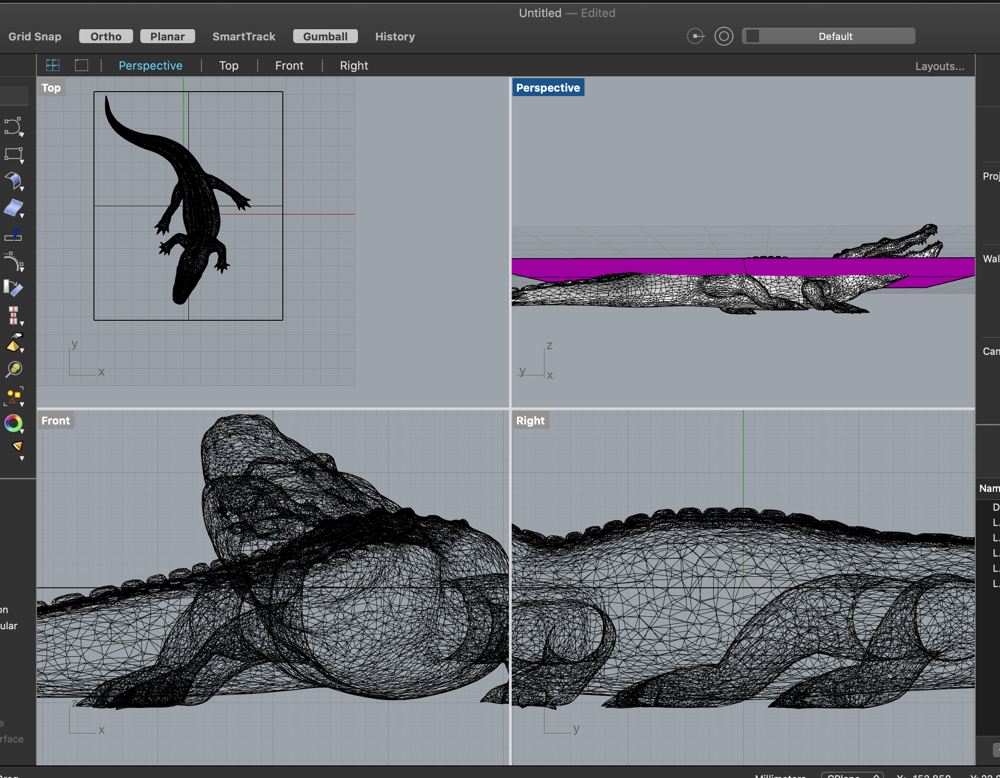
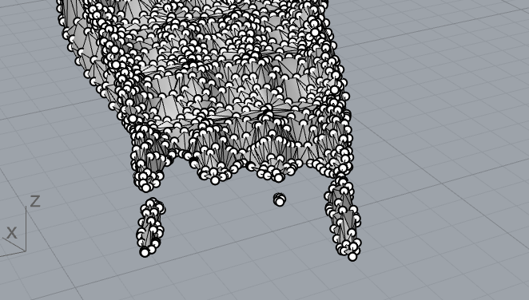
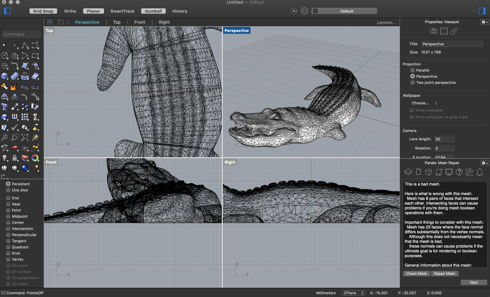
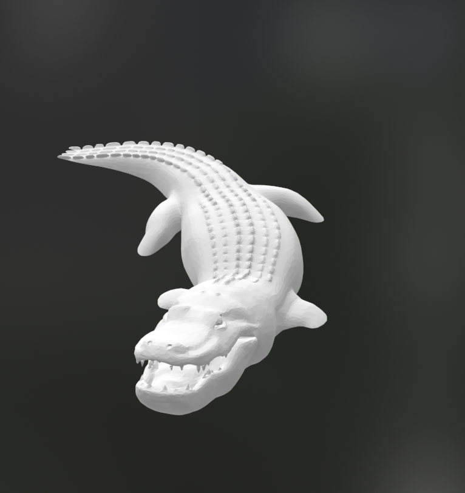
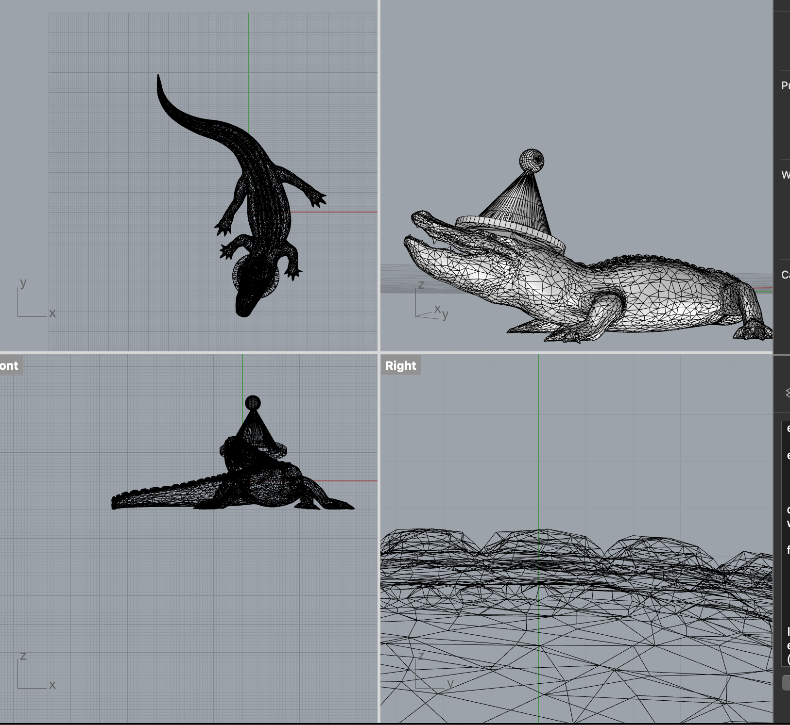
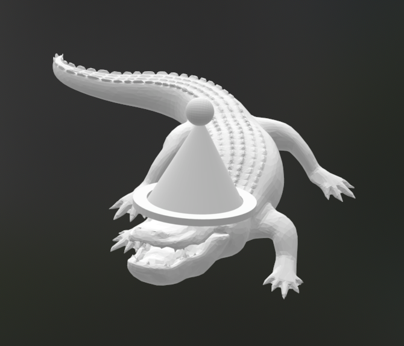

I found this alligator on Thingiverse and wanted to slice off the bottom part of the gator so when the top parts are printed it looks like the alligator is swimming partially underwater.
I imported the alligator to Rhino and reduced the mesh since it was pretty big before. I then created a plane at the point where I wanted to trim the mesh, and used MeshTrim to slice the alligator. Then I turned on points and did some cleanup on the alligator's back.
 
Finally, I used fill mesh holes to fix the holes on the bottom of the alligator. After that, I was able to export it with no issues.
 
Then, I wanted to continue using the alligator mesh but this time I decided to give it a party hat. So I created a STL for a party hat in rhino, and imported the alligator STL from thingiverse. After placing the hat on the alligator's head, I used MeshBooleanUnion to join the two separate meshes. Then I used Repair to correct the issues after the union. There was still naked edges in one of the alligator toes somehow, and I messed around a bit trying to fix it and eventually resolved it by deleting some offending points and edges and then filled the hole.
 